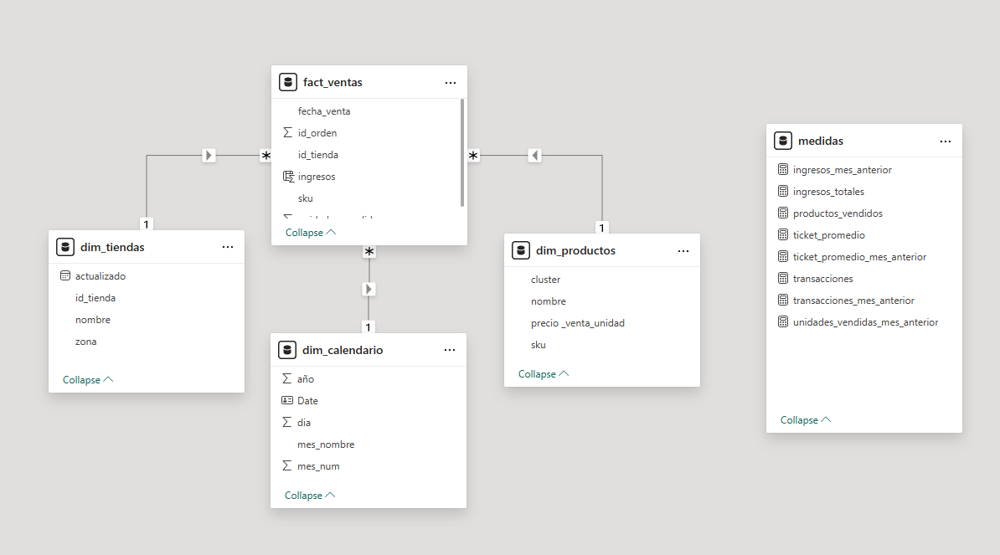

People Analytics Dashboard
Dashboard desarrollado para análisis de Recursos Humanos, incluyendo rotación, perfiles de empleado, satisfacción laboral, horas extra y métricas clave de talento. Compuesto por tres páginas temáticas: Overview, Attrition Analysis y Employee Profile.
Página 1

Página 2

Página 3

Sales Dashboard
Dashboard orientado a la visualización de ingresos, ticket promedio, productos vendidos y transacciones. Se utilizó un modelo dimensional compuesto por una tabla de hechos y tres dimensiones. Incluye comparativos mensuales, análisis por tienda, categoría, producto y tendencias diarias.
Modelo de Datos
Página 1 – Reporte de Ingresos

Página 2 – Reporte de Productos